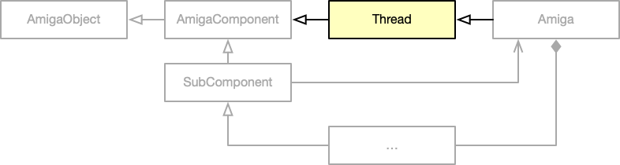
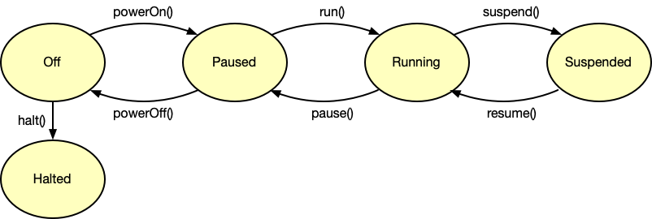

The Thread Class
Contents
The Thread Class#
In this document we will take a closer look at the Thread class, which adds concurrent code execution capabilities to the Amiga class. In addition, it implements the state model of the emulator.

As soon as an instance of the Amiga class is created, an emulator thread is spawned in the constructor:
Amiga::Amiga()
{
...
// Start the thread and enter the main function
thread = std::thread(&Thread::main, this);
...
}
The thread is never terminated. It remains alive until the application quits.
Main function#
After the thread has been created, it starts executing the Thread::main function which is inherited from the Thread class. This function consists of a large while loop which looks like this:
void
Thread::main()
{
while (++loopCounter) {
if (isRunning()) {
switch (getSyncMode()) {
case SyncMode::Periodic: execute<SyncMode::Periodic>(); break;
case SyncMode::Pulsed: execute<SyncMode::Pulsed>(); break;
}
}
if (!warpMode || !isRunning()) {
switch (getSyncMode()) {
case SyncMode::Periodic: sleep<SyncMode::Periodic>(); break;
case SyncMode::Pulsed: sleep<SyncMode::Pulsed>(); break;
}
}
...
}
}
Because the thread is never terminated, the loop is executed during the entire lifetime of the application. Within the loop body, two switch-case blocks can be spotted. The first one is executed as long as the emulator is running and calls one of two possible functions, depending on the operation mode of the thread. Both functions emulate the Amiga for a single frame. The second switch-case block is executed when the emulator is not running in warp mode. Within this block, one of two synchronization functions is called, again depending on the selected operation mode. The purpose of these functions is to keep the thread running at the right pace. That is, they ensure that the functions are called 50 times per second for PAL machines and 60 times per second for NTSC machines.
Two synchronization modes are available: Periodic and Pulsed.
enum class SyncMode { Periodic, Pulsed };
In periodic mode the thread puts itself to sleep and utilizes a timer to schedule a wakeup call. This method is the default mode for vAmiga, as it supports arbitrary frame rates.
In pulsed mode, the synchronization function waits for an external wake-up signal. vAmiga uses this mode when VSYNC is enabled. In this case the external signal is sent from the graphics backend.
State model#
Let’s take a closer look at the isRunning() function, whose implementation is very straightforward:
bool isRunning() const override { return state == EXEC_RUNNING; }
The variable state may hold one of the following values:
EXEC_OFF: The emulator is turned off.EXEC_PAUSED: The emulator is turned on, but not running.EXEC_RUNNING: The emulator does its job. The virtual Amiga is alive.EXEC_SUSPENDED: The emulator is paused for a short period of time.EXEC_HALTED: The emulator is shutting down.
The following image provides a visual representation of the state model:

After creating an instance of the Amiga class the emulator is in OFF state. By calling the function powerOn() the emulator is put into PAUSED state. This is the same state that is entered when the user presses the Pause button in the toolbar. A call to run() brings the virtual Amiga to life by putting it into a RUNNING state.
The Thread class provides a suspend-resume mechanism that can be used to pause the thread for a short period of time. This functionality is frequently used by the graphical user interface to carry out atomic operations that cannot be performed while the emulator is running. Theoretically, the thread could also be put into PAUSED state for this purpose, but this would also stop audio. To avoid disruptions, a special SUSPENDED state has been added. In this state the execute function is no longer called, but other services, such as the audio playback, are kept alive.
The SUSPENDED state is entered by calling suspend() and exited by calling resume(). Critical code sections can be executed safely by embedding them in a suspend-resume block like this:
suspend();
// Change the internal state of the emulator as you like.
resume();
It is safe to nest multiple suspend-resume blocks, but it is essential that each call to suspend() is followed by a call to resume(). Consequently, the critical code section must not be exited in the middle, e.g. by throwing an exception. For this reason, you will often see the keyword SUSPENDED in the code, which is an exit-safe wrapper around suspend() and resume(). With this macro, the above code snippet can be rewritten as follows:
{ SUSPENDED
// Change the internal state of the emulator as you like.
// Feel free to return or throw an exception.
}
To speed up emulation, e.g. during disk accesses, the emulator may be put into warp mode, which is also handled by the Thread class. As you have seen in the code fragment of the Thread::main() function, neither of the two synchronization functions is called when warp mode is active.
Similar to warp mode, the emulator can be put into debug mode. This mode is activated when the GUI debugger is opened and deactivated when the debugger is closed. In debug mode, several time-consuming tasks are performed that are normally skipped. For example, the CPU keeps track of all executed instructions and stores the recorded information in a trace buffer.
The Thread class provides several API functions for changing state such as powerOn(), powerOff(), run(), pause() or halt(). These functions request the thread to change state by assigning the new state to the variable newState. The main function checks this variable in each iteration of the while loop and performs a state change when necessary. The corresponding code is not visible in the code snippet above. It hides behind the three dots (...) and looks like this:
// Are we requested to enter or exit warp mode?
if (newWarpMode != warpMode) {
AmigaComponent::warpOnOff(newWarpMode);
warpMode = newWarpMode;
}
// Are we requested to enter or exit warp mode?
if (newDebugMode != debugMode) {
AmigaComponent::debugOnOff(newDebugMode);
debugMode = newDebugMode;
}
// Are we requested to change state?
while (newState != state) {
if (state == EXEC_OFF && newState == EXEC_PAUSED) {
AmigaComponent::powerOn();
state = EXEC_PAUSED;
} else if (state == EXEC_OFF && newState == EXEC_RUNNING) {
AmigaComponent::powerOn();
state = EXEC_PAUSED;
}
...
}